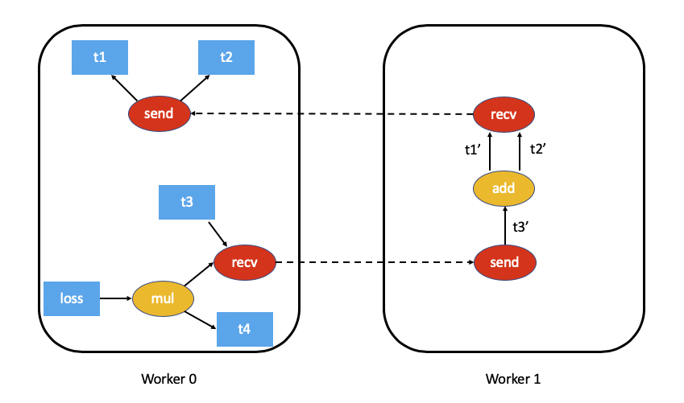

分布式 Autograd 设计
本文概述分布式 autograd 的设计，并梳理其内部实现。阅读前建议先了解 Autograd 工作原理和 RPC 框架的基本概念。
背景
假设我们有两个节点，一个简单模型被拆分在两个节点上。可以使用 torch.distributed.rpc 实现如下：
import torch
import torch.distributed.rpc as rpc
def my_add(t1, t2):
return torch.add(t1, t2)
# 在 worker0 上：
t1 = torch.rand((3, 3), requires_grad=True)
t2 = torch.rand((3, 3), requires_grad=True)
# 远程执行部分计算。
t3 = rpc.rpc_sync("worker1", my_add, args=(t1, t2))
# 基于远程结果再执行本地计算。
t4 = torch.rand((3, 3), requires_grad=True)
t5 = torch.mul(t3, t4)
# 计算损失。
loss = t5.sum()
分布式 autograd 的主要目标是：以 loss 为起点运行 backward，并为所有需要梯度的张量记录正确的梯度。
前向过程中的 autograd 记录
PyTorch 会在前向过程中构建 autograd 图，之后用于执行反向传播， 更多背景可参考官方文档“Autograd 如何记录历史”章节。
在分布式场景中，我们需要追踪前向过程中的所有 RPC，确保反向传播正确执行。
因此，在执行 RPC 时会向 autograd 图中插入 send 与 recv 函数。
send函数附着在 RPC 源节点上，其输出边指向 RPC 输入张量的 autograd 函数。 反向过程中，它会从目标节点接收对应recv函数的输出作为输入梯度。recv函数附着在 RPC 目标节点上，其输入来自目标节点上基于 RPC 输入张量执行的运算。 它的输出梯度会在反向过程中发送回源节点的send函数。- 每个
send-recv对拥有全局唯一的autograd_message_id，用于在反向时在远端查找对应函数。 - 对于 RRef，调用
torch.distributed.rpc.RRef.to_here()时会对相关张量插入相应的send-recv对。
下图展示了前述示例的 autograd 图（为简化起见省略 t5.sum()）：

分布式 Autograd 上下文
每次使用分布式 autograd 的前向和反向都对应一个唯一的上下文 torch.distributed.autograd.context，该上下文拥有全局唯一的 autograd_context_id。
上下文会在各节点按需创建。
上下文的作用如下：
- 多个节点的分布式 backward 可能会在同一个张量上累积梯度，这样在运行优化器之前，
张量的
.grad字段可能混杂来自不同 backward 的梯度，类似本地多次调用torch.autograd.backward()。为区分不同 backward 的梯度，每次 backward 的梯度都会存入对应的 该上下文会保存所有send/recv函数，确保 Autograd 图在 backward 期间保持有效。 - 前向过程中会在上下文中记录每个 autograd pass 的
send和recv函数。 这样既能保持对 autograd 图节点的引用（防止被释放），又便于在 backward 阶段查找对应函数。 - 上下文还用于存储每次分布式 autograd 的元数据。
从用户角度，可以这样设置上下文：
import torch.distributed.autograd as dist_autograd
with dist_autograd.context() as context_id:
loss = model.forward()
dist_autograd.backward(context_id, loss)
请务必在分布式 autograd 上下文管理器内执行模型前向。这样才能确保正确记录所有 send 和 recv 函数，
从而在参与的所有节点上执行反向传播。
分布式反向传播
本节讨论在分布式反向过程中准确计算依赖关系的挑战，并介绍两种算法（各有取舍）。
依赖关系计算
考虑在单机上运行的以下代码：
import torch
a = torch.rand((3, 3), requires_grad=True)
b = torch.rand((3, 3), requires_grad=True)
c = torch.rand((3, 3), requires_grad=True)
d = a + b
e = b * c
d.sum().backward()
其 autograd 图如下（括号中的数字表示依赖数量）：
autograd 引擎在 backward 开始时会统计图中每个节点的依赖数量，这样就知道何时可以执行该节点。
本地 autograd 引擎通过遍历根节点（此例中为 d）即可得到依赖。
然而，在分布式环境中，某些节点可能不会在 backward 中执行，这带来了额外挑战。考虑以下使用 RPC 的代码：
import torch
import torch.distributed.rpc as rpc
a = torch.rand((3, 3), requires_grad=True)
b = torch.rand((3, 3), requires_grad=True)
c = torch.rand((3, 3), requires_grad=True)
d = rpc.rpc_sync("worker1", torch.add, args=(a, b))
e = rpc.rpc_sync("worker1", torch.mul, args=(b, c))
loss = d.sum()
对应的 autograd 图如下：

对这样的分布式图统计依赖更加困难，需要额外的计算或通信开销。
在性能敏感的场景中，我们可以假定每个 send 和 recv 函数都会参与 backward，
从而避免大量开销（大多数应用不会发起无用的 RPC）。这样可以显著简化分布式 autograd 算法，提高效率，
但需要应用了解该限制。我们称其为 FAST 模式算法，下文将详细介绍。
在一般情况下，并非所有 send/recv 都必然参与 backward。为此，我们提出了
SMART 模式算法（下文说明）。目前仅实现了 FAST 模式。
FAST 模式算法
FAST 模式假设每个 send 在 backward 中的依赖数为 1，即一定会从其他节点接收梯度。
算法流程：
- 从包含 backward 根节点的 worker 开始（所有根节点必须是本地的）。
- 查找当前分布式 autograd 上下文中的所有
send。 - 从给定根节点及这些
send出发，本地计算依赖。 - 计算完成后，启动本地 autograd 引擎。
- 当 autograd 引擎执行
recv时，该函数会将输入梯度通过 RPC 发送给相应的源 worker。 每个recv在前向时已记录目标 worker ID，同时会发送autograd_context_id和autograd_message_id。 - 源 worker 收到请求后，利用这两个 ID 找到对应的
send。 - 如果这是该 worker 第一次处理该
autograd_context_id，则重复步骤 1-3 计算本地依赖。 - 找到的
send会被加入本地 autograd 引擎执行。 - 梯度不会累加到张量的
.grad上，而是按上下文单独保存，使用torch.distributed.autograd.get_gradients()可获取Dict[Tensor, Tensor]映射。
示例代码如下：
import torch
import torch.distributed.autograd as dist_autograd
import torch.distributed.rpc as rpc
def my_add(t1, t2):
return torch.add(t1, t2)
# 在 worker0 上：
with dist_autograd.context() as context_id:
t1 = torch.rand((3, 3), requires_grad=True)
t2 = torch.rand((3, 3), requires_grad=True)
# 远程计算。
t3 = rpc.rpc_sync("worker1", my_add, args=(t1, t2))
# 基于远程结果的本地计算。
t4 = torch.rand((3, 3), requires_grad=True)
t5 = torch.mul(t3, t4)
# 计算损失。
loss = t5.sum()
# 运行分布式 backward。
dist_autograd.backward(context_id, [loss])
# 获取梯度。
dist_autograd.get_gradients(context_id)
其依赖图如下（省略 t5.sum()）：

FAST 模式在此例中的执行过程：
- 在 worker0 上从根节点
loss与send1开始计算依赖，得到send1依赖 1 次、worker0 上的mul依赖 1 次。 - 启动 worker0 的本地 autograd 引擎，先执行
mul并将结果累积为t4的梯度，再执行recv2将梯度发送给 worker1。 - worker1 首次收到该 backward，开始计算依赖，标记
send2、add、recv1。 - 将
send2加入 worker1 的 autograd 引擎，依次执行add和recv1。 recv1执行后将梯度发送给 worker0。- worker0 已经计算过依赖，直接在本地执行
send1。 - 最终，上下文中累积了
t1、t2、t4的梯度。
SMART 模式算法
SMART 模式算法还在完善中，可参考 RFC_ 中 Distributed Autograd Algorithm Smart mode 部分了解思路。
分布式优化器
torch.distributed.optim.DistributedOptimizer 的工作方式如下：
- 接收待优化的远程参数列表（
torch.distributed.rpc.RRef），本地参数可用本地RRef包装。 - 接收本地优化器类（如
torch.optim.Optimizer），将在所有拥有参数的 worker 上实例化。 - 分布式优化器会在各 worker 上创建本地优化器实例，并持有它们的
RRef。 - 调用
torch.distributed.optim.DistributedOptimizer.step()时，会通过 RPC 在对应节点执行本地优化器。 该方法需要传入分布式 autograd 的context_id，以便本地优化器应用存储在上下文中的梯度。 - 如果多个分布式优化器同时更新同一 worker 的参数，会通过锁串行化这些更新。
端到端示例
下面给出一个结合分布式 autograd 与分布式优化器的完整示例。若将代码保存为 "dist_autograd_simple.py"，可通过
MASTER_ADDR="localhost" MASTER_PORT=29500 python dist_autograd_simple.py 运行：
import torch
import torch.multiprocessing as mp
import torch.distributed.autograd as dist_autograd
from torch.distributed import rpc
from torch import optim
from torch.distributed.optim import DistributedOptimizer
def random_tensor():
return torch.rand((3, 3), requires_grad=True)
def _run_process(rank, dst_rank, world_size):
name = f"worker{rank}"
dst_name = f"worker{dst_rank}"
rpc.init_rpc(name=name, rank=rank, world_size=world_size)
with dist_autograd.context() as context_id:
# 前向（在远端创建参数）
rref1 = rpc.remote(dst_name, random_tensor)
rref2 = rpc.remote(dst_name, random_tensor)
loss = rref1.to_here() + rref2.to_here()
# 分布式 backward
dist_autograd.backward(context_id, [loss.sum()])
# 构造分布式优化器
dist_optim = DistributedOptimizer(
optim.SGD,
[rref1, rref2],
lr=0.05,
)
# 执行优化步骤
dist_optim.step(context_id)
def run_process(rank, world_size):
dst_rank = (rank + 1) % world_size
_run_process(rank, dst_rank, world_size)
rpc.shutdown()
if __name__ == "__main__":
world_size = 2
mp.spawn(run_process, args=(world_size,), nprocs=world_size)
更多细节请参考 RFC 讨论。